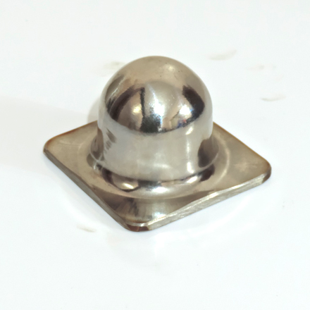
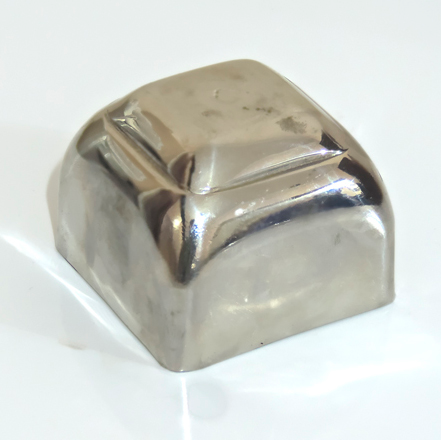
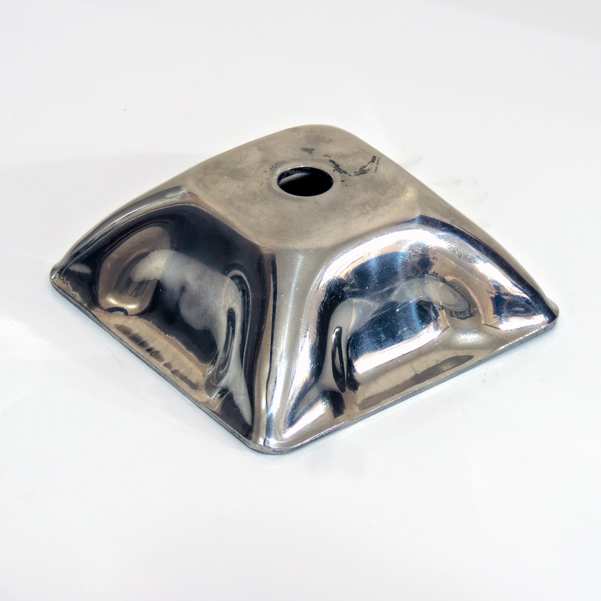
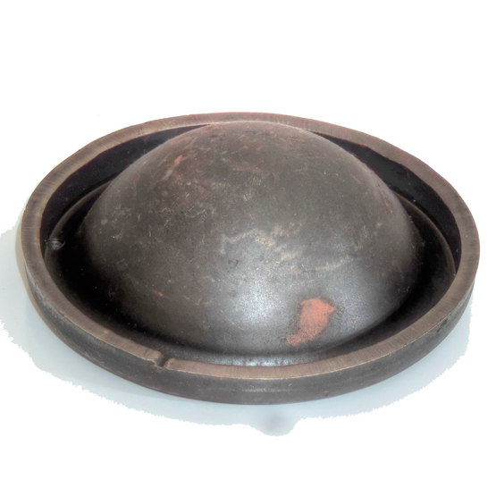
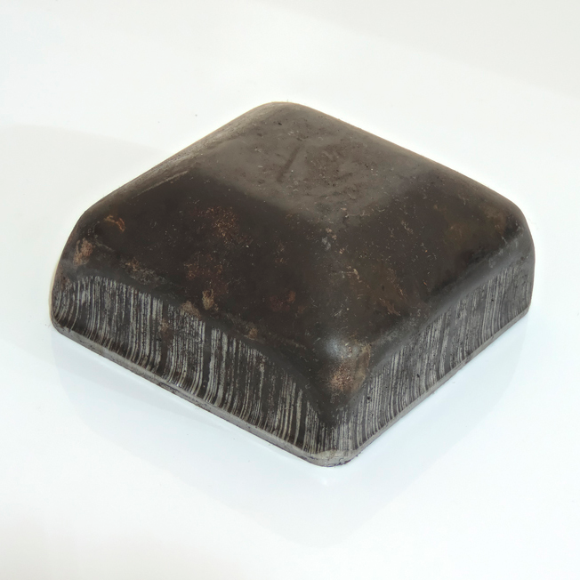
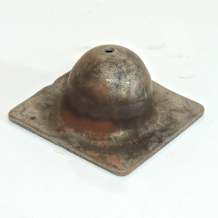

Sapata Macho
Sapata macho para tubo de 50x50mm de rack industrial, padrão Nissan em aço carbono 1020 SAE - 0,13kg / Unidade

Sapata fêmea
Sapata fêmea para tubo de 50x50mm de rack industrial, padrão Nissan em aço carbono 1020 SAE - 0,34kg / Unidade

Sapata
Sapata para tubo de 40x40mm de rack industrial, padrão Honda em aço carbono 1020 SAE - 0,29kg / Unidade

Sapata redonda fêmea 130mm
Sapata fêmea 130mm para tubo de 60mm de rack industrial, aço carbono 1020 SAE - 0kg / Unidade

Sapata macho 60mm
Sapata macho para tubo de 60mm de rack industrial em aço carbono 1020 SAE - 0kg / Unidade

Sapata
Sapata fêmea 100x100mm para tubo de 50x50mm de rack industrial, padrão Toyota em aço carbono 1020 SAE - 0,425kg / Unidade

Sapata macho
Sapata macho para tubo de 60x60mm de rack industrial, padrão Nissan em aço carbono 1020 SAE - 0,18kg / Unidade